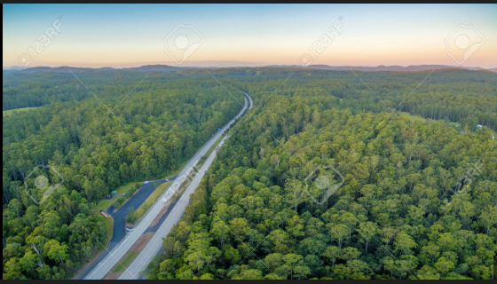

Sai Adhvik
Animals across the world are adapting to human transportation systems such as roads, railways, ships, and airplanes. These systems affect how animals move, communicate, and survive, forcing them to change their behavior and sometimes even their physical traits to live alongside humans.
Many animals change when and where they move to avoid traffic and noise, such as becoming nocturnal or altering migration routes. Some even use transport systems to their advantage, like predators traveling along roads or dolphins riding ship waves. However, noise, pollution, and habitat division caused by transportation create stress and long-term challenges for wildlife.
Transport systems fragment habitats, increase collision risks, and disrupt animal communication through noise pollution. Urban animals such as pigeons, raccoons, and seagulls have adapted to these conditions, though not without risks to their safety.
>Transportation has reshaped animal life in many ways, and careful planning and conservation are needed to reduce harm and support coexistence.